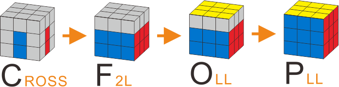
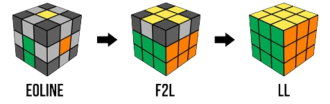

The beginner method for solving a Rubik's cube is a straightforward and accessible technique that is ideal for those who are just starting to learn how to solve the puzzle. This method typically involves solving one layer of the cube at a time, starting with the bottom layer and moving upwards. The first step involves solving the bottom layer by creating a cross, followed by completing the first layer corners. Then, the middle layer is solved by moving the pieces from the top layer to their respective positions in the middle layer. Finally, the top layer is solved by orienting the last layer and shifting its pieces to create a complete solved cube. With practice, this method can be mastered quickly, and it provides a solid foundation for exploring more advanced solving techniques.
The CFOP method, also known as the Fridrich method, is an advanced technique for solving a Rubik's cube that is widely used by speedcubers. The method is based on four main steps: cross, F2L (first two layers), OLL (orientation of the last layer), and PLL (permutation of the last layer). The first step involves solving the cross on the bottom layer while simultaneously inserting the first layer corners. The second step involves solving the remaining corners and edges of the first two layers. The third step involves orienting the last layer in one of 57 possible cases. The final step involves permuting the last layer pieces to solve the cube. While the CFOP method may seem complex, it allows for faster solving times by reducing the number of moves required to solve the cube and allowing for more efficient algorithms. However, mastering the method requires a lot of practice and memorization of algorithms. This method is the most popular method for speed solving
The Roux method is an another technique for solving a Rubik's cube that is identified by its fewer moves than other methods. The method is based on two main steps: block building and solving the rest of the cube. The first step involves creating two 1x2x3 blocks on opposite sides of the cube, one on the left and one on the right. These blocks are then combined to form a 2x2x3 block in the middle layer. The second step involves solving the remaining pieces of the cube by manipulating the 2x2x3 block. This approach allows for more intuitive solving and fewer algorithms to be memorized, making it an attractive method for many speedcubers. However, it requires a lot of practice and spatial reasoning skills to master, and its efficiency is dependent on the solver's ability to recognize and create efficient block-building techniques.
The ZZ method for solving the Rubik's Cube consists of three main steps: EO, F2L, and EPLL. The first step is EO (Edge-Orientation), the goal is to orient all of the edges on the cube so that they are either in their correct position or one move away from. Next, F2L is used to solve the first two layers of the cube by pairing up corner and edge pieces and inserting them into their correct position in one step. Finally, EPLL (Edge Permutation and Last Layer) is used to solve the last layer of the cube by shifting the edges into their correct position, followed by orienting the corners. The ZZ method is least popoular method out of these four.
